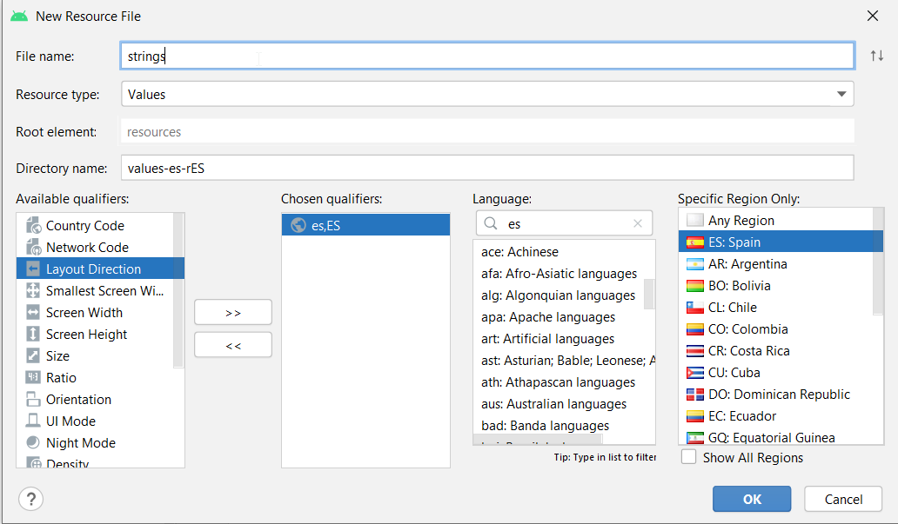
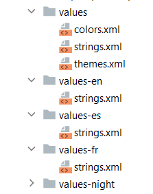
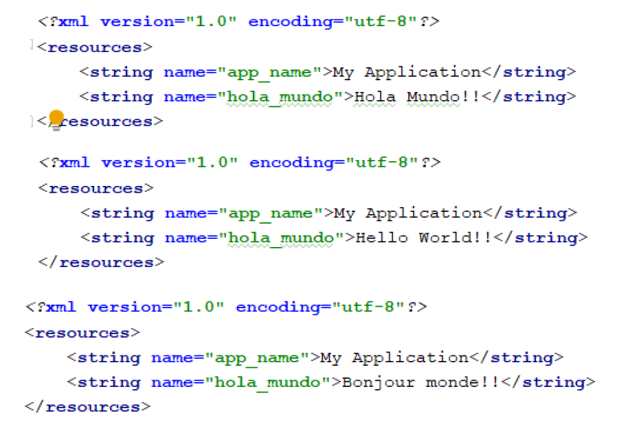
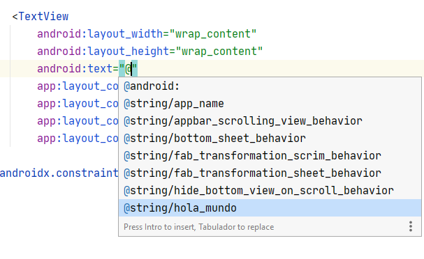
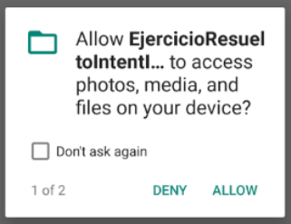
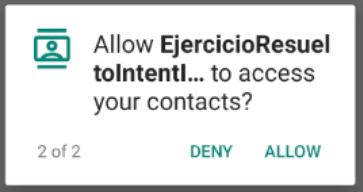

Apuntes
Tema 2 . Estructura de un proyecto Android Studio
Índice
- Creando el primer proyecto de Android
- Estructura de un proyecto en Android Studio
- Recursos en Android
- Android Manifest
- Gradle
Creando el primer proyecto de Android
Vamos a realizar nuestro primer ejemplo en Android, nos servirá básicamente para conocer el entorno Android Studio y las carpetas de las que consta un proyecto Android creadas con este entorno. Una vez instalada la aplicación y si no se ha creado un proyecto con anterioridad, al abrir el entorno nos encontraremos con una ventana como la que sigue:
Como podemos ver, esta ventana nos permite crear un proyecto nuevo, abrir uno existente o realizar otras opciones, pulsaremos en Create a New Project.
Deberemos seleccionar el tipo de actividad que se creará como inicio de nuestro proyecto, la opción que necesitaremos a lo largo del curso es una Empty Activity, que nos creará una actividad vacía.

A partir de aquí deberemos seleccionar el nombre de paquete que vamos a dar a nuestra aplicación que si no se modifica coincidirá con el ID de la aplicación, la localización y el nombre de la aplicación que suele estar incluido en el paquete, además también deberemos seleccionar el Lenguaje con el que queremos trabajas (Java o Kotlin). En Save location podemos seleccionar donde queremos dejar nuestra aplicación.
La última opción permitirá seleccionar el SDK mínimo con el que queráis que corra vuestra aplicación. El máximo no hace falta seleccionarlo porque el proyecto cogerá el SDK más actualizado que tengas instalado. Junto al selector del sdk, podéis ver una explicación y un enlace en el que se pueden ver las estadísticas actualizadas del porcentaje de móviles que podrán correr vuestra aplicación, según el mínimo SDK seleccionado.
A partir de aquí deberemos esperar un poco hasta que se genere nuestro proyecto y aparezca una ventana parecida a la siguiente:
Estructura de un proyecto en Android Studio
Una vez llegados aquí, se habrá abierto el árbol de carpetas de la aplicación a la izquierda (aunque esta ventana es movible. Por si os resulta más útil en otro lugar de la ventana de Android Studio, sabed que podéis moverla pulsando y arrastrando la pestaña con nombre 1: Project a cualquier parte. También podéis mover el resto de las ventanas que están abiertas.
En el árbol de directorios tenéis varias formas de listar las carpetas y archivos de la aplicación. Las dos principales son Android, Project, y Package, pero hay otras que podéis usar, por ejemplo: Problems mostrará sólo los archivos que tienen errores.
La carpeta app es la que contiene todo lo relacionado con tu proyecto, es la carpeta que nos interesa por el momento y donde incluiremos los archivos necesarios para que nuestra aplicación sea empaquetada. Si despliegas su contenido veras tres carpetas: build, libs y src. Por ahora ignoraremos los demás archivos.
Normalmente la mayor parte del tiempo y fuerzas las usaremos en la carpeta src(Source). Dentro de ella se ubica la carpeta main, la cual contiene todos los archivos fuente Java y Kotlin para nuestra aplicación. La carpeta res (Resources) que contiene los recursos del proyecto (iconos, sonido, diseños, etc.) y el archivo AndroidManifest.xml , más adelante profundizaremos en él.
La Activity (o Activitys) que hemos creado se encuentran en Nombre de vuestra App->src->main->java->Paquete de vuestra App.
Algunos de los otros archivos imprescindibles de toda aplicación Android, son los recursos que se encuentran en la carpeta Nombre de vuestra App->src->main->res. Una vez dentro podéis ver, entre otras, las carpetas layout, drawable y mipmap.
Recursos en Android
Los recursos son archivos o datos externos que soportan el comportamiento de nuestra aplicación Android por ejemplo imágenes, strings, colores, estilos, etc.
Formalmente en un proyecto, estos elementos se encuentran en la carpeta res nombrada anteriormente. Allí se encuentran subdirectorios que agrupan los diferentes tipos de recursos.
La idea del uso de recursos es dividir el código de tu app para mantener independencia. Todo con el fin de agregar variaciones de los archivos para adaptar la aplicación a diferentes tipos de pantallas, idiomas, versiones, dimensiones, configuraciones de orientación, etc. Por ejemplo: no es lo mismo el espacio de un teléfono móvil a una tableta. Sin embargo se pueden crear variaciones de los recursos para que la aplicación se adapte a la densidad de pantalla de cada uno.
Los grupos de recursos se dividen en subdirectorios. Cada uno de ellos contiene archivos que cumplen una función específica dentro de la aplicación. Debes respetar esta estructura de documentos para no tener problemas en la ejecución. En la siguiente Tabla de Recursos, podemos ver un resumen de los más usados.
| Nombre del subdirectorio | Contenido |
|---|---|
| drawable | Recursos gráficos que puedan ser proyectados en pantalla. Generalmente encontrarás archivos de imagen como .png, .jpg o .gif, sin embargo es posible usar otros como: archivos nine-patch, listas de estado, drawables con múltiples niveles, drawables con figuras 2D definidas en XML, y muchas más. |
| mipmap | Contiene el o los iconos de la aplicación para evitar distorsión entre varias densidades de pantalla. |
| layout | Archivos XML que contienen definiciones de la interfaz de usuario. |
| menu | Archivos XML que establecen las características para los menús usados en la interfaz. Normalmente contienen definiciones sobre los ítems albergados en un menú y las agrupaciones entre ellos. |
| values | Archivos XML que contienen datos simples como enteros, strings, booleanos, colores. |
Recursos Alternativos En Android
Un recurso alternativo es una variación de un recurso, que se ajusta a una característica de configuración en el dispositivo móvil donde se ejecuta la aplicación. Esto se logra a través de una tabla de calificadores creada por Google que estandariza todas las configuraciones posibles que se puedan presentar.
Un calificador es un mecanismo gramatical que especifica el propósito de un recurso. Su sintaxis es la siguiente: <nombre_recurso>-<calificador>
Por ejemplo: mipmap-hdpi contendrá la variación del recurso ic_launcher.png para dispositivos con densidad de pantalla de 240dpi. Esta condición es especificada por el calificador hdpi.
✋ todos los archivos que correspondan al mismo recursos deberán de tener el mismo nombre, se identificarán gracias al calificador añadido al identificador de carpeta.
Si hay que indicar más de un calificador, se separan por guiones y el orden de preferencia es el que se sigue en la tabla, el primer calificador será el de más preferencia. Por ejemplo: dispositivos en inglés de Estados Unidos y en orientación horizontal, tendrán un nombre de recurso alternativo en el drawable, de la siguiente manera drawable-en-rUS-land.
✋ Una vez que guardes los recursos alternativos en directorios denominados con estos calificadores, Android aplicará automáticamente los recursos en tu aplicación de acuerdo con la configuración del dispositivo actual
La carpeta Layout
En la carpeta layout encontrarás los archivos que contienen las vistas de las actividades o fragments. Al crear el proyecto contiene el archivo activiy_main.xml. Este archivo representa el diseño de la interfaz de mi actividad principal.
Construir la interfaz a través de nodos XML es mucho más sencillo que la creación a través de código Java o Kotlin. Adicionalmente Android Studio nos ha dotado de un panel de diseño estilo Drag and Drop, lo cual es una bendición para los desarrolladores, ya que facilita la creación de la interfaz de usuario.
Este archivo de diseño comienza con un nodo raíz llamado <ConstraintLayout>. Un Layout es el contenedor principal que define el orden y secuencia en que se organizarán los widgets en nuestra actividad. Existen varios tipos de Layouts, como por ejemplo el LinearLayout, GridLayout, FrameLayout, ConstraintLayout, etc.
Android Studio crea por defecto un ConstraintLayout porque permite crear un grupo de componentes con ubicaciones relativas y además permite todo el control a través del Editor de Diseño. Si abres el archivo activiy_main.xml de tu aplicación verás algo como esto:
Más adelante profundizaremos sobre los elementos de diseño tipo Layouts.
Las carpetas Mipmap y Drawable
Como ya has visto, hay una serie de carpetas que comienzan por el cualificador mipmap y drawable. Estas carpetas se relacionan directamente con el tipo de densidad de pantalla donde se ejecutará nuestra aplicación.
La mayoría de dispositivos móviles actuales tienen uno de estos 4 tipos de densidades:
- Mediun Dots per Inch(mdpi): Este tipo de pantallas tienen una densidad de 160 puntos por pulgada.
- High Dots per Inch(hdpi): En esta clasificación encontraremos teléfonos cuya resolución es de 240 puntos por pulgada.
- Extra high dots per inch(xhdpi): Resoluciones mayores a 340 puntos por pulgada
- Extra Extra high dots per inch(xxhdpi): Rangos de resoluciones mayores a 480 puntos por pulgada.
- Extra Extra Extra high dots per inch(xxxhdpi): Rangos de resoluciones mayores a 640 puntos por pulgada.
Miremos una pequeña imagen ilustrativa:
La imagen muestra algunos ejemplos de dispositivos móviles cuya densidad se encuentra dentro de los rangos establecidos. Al final podemos ver una categoría extra llamada xxxhdpi. Esta denominación describe a la densidad de televisores de última generación que ejecutan Android.
Android Studio 3 crea un icono adaptativo para su aplicación que solo está disponible en SDK 26 y posteriores. Estos iconos adaptativos se incluyen en la carpeta mipmap-anydpi-v26, son archivos .xml que se adaptan a la tecnología del dispositivo. Por ejemplo: un ícono de selector adaptable se puede mostrar con una forma circular en un dispositivo OEM y con un cuadrado con esquinas redondeadas en otro.
La carpeta drawable sirve para colocar todas las imágenes que vaya a utilizar nuestra aplicación, siguiendo el mismo esquema de sufijos que mipmap. Mientras que en la carpeta mipmap únicamente colocaremos el icono de la app. Como podemos observar, cuando creamos un proyecto en Android Studio, por defecto, ya nos coloca ahí el icono con el nombre de ic_launcher.
La carpeta values
Dentro de la carpeta values se crean por defecto tres archivos colors, strings, themes, vamos a comentar los dos primeros y dejas el de themes para más adelante, ya que necesita una explicación mas detallada.
Dentro del archivo de colores colors.xml los elementos deben ser declarados con la etiqueta <color>. Se debe asignar un nombre único con el atributo name y su contenido es un color en forma hexadecimal que empieza por el símbolo numeral '#'. Se puede acceder a la paleta de colores al pulsar sobre cualquiera de los cuadros de color de la izquierda.
Uno de los recursos más relevantes es el archivo strings.xml. Este fichero almacena todas las cadenas que se muestran en los widgets (controles, formas, botones, vistas, etc.) de nuestras actividades. Para declarar nuestro recurso de strings usaremos el nodo raíz <resources>. Para declarar las cadenas usaremos la etiqueta <string> y estableceremos el atributo name como identificador. Dentro de esta etiqueta pondremos el texto que se visualizará en el componente de interfaz.
Por ejemplo, si tuvieses un botón cuyo título es "Presiona aquí", es recomendable incluir dicha cadena en tu archivo strings.xml.
La etiqueta app_name contiene el nombre de la aplicación. En este caso es "My Application".
El archivo strings.xml es muy útil para los desarrolladores. Una de sus grandes utilidades es facilitar el uso de múltiples idiomas en la aplicación. Esto se debe a que puedes externalizar las cadenas del código y el sistema se encargara de seleccionar la versión del archivo strings.xml con el lenguaje necesitado, según la configuración del dispositivo.
🎓 Vamos a definir nuestra aplicación para poder configurarla en tres idiomas: español, inglés y francés, para una aplicación multi-idioma sería necesario incluir recursos de tipo cadena para cada idioma que tenga la aplicación, para ello crearíamos tres versiones del fichero strings.xml y lo guardaríamos en los recursos adicionales de values según el idioma, para saber las extensiones de los idiomas, aunque Android Studio nos proporciona la opción de crear recursos fácilmente. Por ejemplo, si dentro de la carpeta res, seleccionas
new -> Android Resources Filey seleccionamos value, podremos crear los recursos adicionales por localidad:Al añadir los tres recursos adicionales, las carpetas quedarían de la siguiente manera. La carpeta values sin calificador, sería para el idioma por defecto:
Si a cada uno de ellos le añadimos el siguiente contenido:
Nos quedaría asociar esta cadena al TextView que hay en el layout principal. Par ello abrimos el archivo
activity_mainde la carpetalayouty en el atributo text seleccionamos el recurso string hola_mundo.Al ejecutar la aplicación y dependiendo de la configuración de idioma del dispositivo, el texto aparecerá en un idioma u otro.
Personalmente te recomiendo que uses este archivo siempre, incluye todo tu texto y no dejes nada por fuera, tu aplicación te lo agradecerá en el futuro.
Acceder a los Recursos en Android
Ahora que se ha entendido que son los recursos, vamos a entender como pueden ser accedidos en el código Kotlin o en el código XML. Para obtener la referencia de un recurso es necesario que se le asigne un identificador que lo diferencie y le indique al programador donde se encuentra.
Cada identificador se ubica en una clase llamada R a través de una constante entera. Esta clase es generada automáticamente por una herramienta del SDK llamada appt, por lo que no es recomendable editarlo manualmente. Cada tipo de recurso existente dentro de la carpeta res es una clase anidada estática del archivo R.class. Por ejemplo, el subdirectorio drawable puede ser accedido como R.drawable.
Acceder desde Kotlin
Ahora, si deseas obtener el identificador de un recurso desde código Kotlin, entonces usas el operador punto para acceder a los miembros de cada clase interna Paquete.R.tipoRecurso.nombreRecurso.
Por ejemplo, si tienes una imagen cuyo identificador es ic_launcher_background. Para acceder a su contenido solo navegas de la siguiente forma R.drawable.ic_launcher_background.
Si se quiere acceder a la clase Resources que incluye todos los recursos de android, podemos obtener una instancia dentro de una actividad con la propiedad resources. A través de ella podemos acceder a los valores de cualquier tipo de recurso.
En este caso hemos accedido a los recursos del sistema, para ello se ha accedido primero a android.R.tipoRecurso.nombreRecurso
Acceder desde XML
Esta forma de referencia se da cuando dentro de un recurso definido en un archivo XML necesitamos usar el valor de otro recurso. Para ello usamos la sintaxis @[Paquete:]tipoRecurso/nombreRecurso
Por ejemplo, cuando a un componente <TextView> dentro de un layout le asignamos el valor de un string definido en el archivo strings.xml.
Para los recursos del sistema desde xml sería @android:tipoRecurso/nombreRecurso
Android Manifest
El Manifest se puede decir que es el archivo más esencial de nuestra aplicación, si se produce un error en él lo más probable es que la App no se pueda ejecutar. Es un archivo XML que contiene nodos descriptivos sobre las características de la App. Características como los building blocks existentes, la versión de SDK usada, los permisos necesarios para ejecutar algunos servicios, activitys y servicios de la aplicación y muchas más.
En pocas palabras el Android Manifest muestra una descripción de toda nuestra aplicación. Su configuración puede realizarse a través de una interfaz gráfica, pero es recomendable conocer la sintaxis ya que en muchas ocasiones será más fácil y rápido hacerlo desde el propio xml.
Si abres el archivo en el editor verás un código similar a este:
El nombre debe permanecer intacto, ya que se usa como referencia para el parsing de nuestra aplicación. El nodo raíz de este documento se representa con la etiqueta <manifest> y por obligación debe contener un hijo de tipo <application>.
En el código anterior podemos observar que manifest posee dos atributos, xmlsn:android y package. El primero no debemos cambiarlo nunca, ya que es el namespace del archivo.
El atributo package indica el nombre del paquete Java/Kotlin que soporta a nuestra aplicación. El nombre del paquete debe ser único y un diferenciador a largo plazo.
La etiqueta <application> representa como estará construida nuestra aplicación. Dentro de ella definiremos nodos referentes a las actividades que contiene, las librerías incluidas, los Intents, Providers, y demás componentes.
Etiqueta aplication
Algunos atributos de la etiqueta <application> son:
- allowBackup: Este atributo puede tomar los valores de true o false. Indica si la aplicación será persistente al cerrar nuestro AVD.
- icon: Indica donde está ubicado el icono que se usará en la aplicación. Debemos indicar la ruta y el nombre del archivo que representa el icono. En este caso apuntamos a las carpetas mipmap donde se encuentra ic_launcher.png. Icono por defecto que nos proporciona Android Studio. Se mostrará en el Android Market y en el lanzador de la aplicación de nuestro dispositivo. También será el icono por defecto para todas las activities que definamos dentro de la etiqueta.
- label: Es el nombre de la aplicación que verá el usuario en su teléfono. Normalmente apunta a la cadena "app_name" que se encuentra en el recurso strings.xml. El contenido de este atributo aparecerá en la barra de título de la actividad si la tuviera. También se usará en el lanzador de la aplicación si definimos esta actividad como el punto de entrada de nuestra aplicación. Si no lo definimos, se utilizará el label definido en la etiqueta
<application>. Será el título por defecto de las activities que definamos dentro de la etiqueta application. - theme: Este atributo apunta al archivo de recursos styles.xml, donde se define la personalización del estilo visual de nuestra aplicación.
- supportsRtl: Declara si la aplicación está dispuesta a admitir diseños de derecha a izquierda (RTL). Si se establece en true y la targetSdkVersion se establece en 17 o superior, en ese caso el sistema activará y utilizará varias API RTL para que la aplicación pueda mostrar diseños RTL. En otro caso se ignorará la configuración de región del usuario.
Dentro de <application> encontraremos expresada la actividad principal que definimos al crear el proyecto. Usaremos <activity> para representar un nodo tipo actividad.
Etiqueta activity
Cada etiqueta <activity> representa una de las actividades de la aplicación. Algunos atributos son:
- label: Hace referencia al texto que se mostrará en la cabecera de la actividad. Si no se indica ningún atributo label, la activity tendrá el mismo nombre que la Aplicación.
Dentro deactivitynos podemos encontrar: - android:name: Especifica el nombre de la actividad, en el ejemplo se ha puesto .MainActivity ya que tenemos el nombre del package definido como atributo del elemento manifest.
- android:screenOrientation: (portrait o landscape) Define la orientación de la aplicación vertical o apaisada. Si no definimos este atributo, se usará el que el dispositivo tenga predeterminado, incluido el variable en función del acelerómetro. Cuando la pantalla cambia de orientación la actividad se destruye.
- android:configChanges En Android, el cambio de orientación o la aparición del teclado se considera un cambio de configuración, lo que hace que la pantalla se redibuje para adaptarse a los cambios. En este atributo definimos los eventos que queremos manejar nosotros, con el fin de evitar que se destruya la actividad. Los diferentes efectos se separan con la barra vertical o pipe
|, podríamos ponerkeyboard|keyboardHydden|orientation, para la aparición desaparición de la pantalla y para el cambio de orientación del dispositivo.
En Android no existe un único punto de entrada para nuestra aplicación. Podemos iniciarla a través de múltiples activities o services que pueden ser iniciados a partir de intents específicos que puede enviar el sistema u otra aplicación. Para decir a Android ante qué intent debe reaccionar nuestra aplicación y cómo, existe el <intent-filter>.
Con la etiqueta intent-filter y su elemento <action> estamos indicando que esta activity va a ser un punto de entrada para nuestra aplicación. Sólo puede haber una activity que reaccione a este intent. Con elemento <category> le decimos a Android que queremos que esta activity sea añadida al lanzador de la aplicación. Pueden haber varias activities que reaccionen a este intent.
De esta manera Android sabe que al ser pulsado el icono de la aplicación, debe iniciar esta activity. Si no hubiéramos establecido el <intent-filter>, esta activity sólo se podría llamar desde dentro de la aplicación. Fijémonos que ambos elementos sólo tienen el atributo name siendo su valor el nombre del intent.
Etiqueta uses-permissions
Android cuenta con un modelo de seguridad muy elaborado. Cada aplicación se ejecuta en su propio proceso y máquina virtual. Android restringe el uso de los recursos del sistema: tarjeta SD, WIFI, HW de audio, etc. Mediante este Tag especificamos los permisos que va a necesitar nuestra aplicación para poder ejecutarse, además son los que deberá aceptar el usuario antes de instalarla. Por ejemplo, si se desea utilizar funcionalidades con Internet o el vibrador del teléfono, hay que indicar que nuestra aplicación requiere esos permisos. Alguno de estos permisos son:
android.permisssion.RECORD_AUDIO, para el acceso al hw de audio y grabación.android.permisssion.INTERNET, concede permiso a todas las API’s de red.android.permisssion.WRITE_EXTERNAL_STORAGE, para almacenamiento externo.android.permisssion.WAKE_LOCK, nos permite antibloqueo (que si el terminal está inactivo éste no se bloquee).
Permisos en momento de ejecución
A partir de los dispositivos con instalación Android 6.0 (nivel de API 23) o superior, es necesario pedir los permisos en el momento de ejecución de la aplicación. Se debe tener en cuenta que los permisos se pedirán justo en el momento en el que el usuario comience a interactuar con la función que los requiere, si estos son rechazados por el usuario es importante que el flujo de la App pueda seguir funcionando.
Un modelo a seguir podría ser el siguiente:
-
Declara los permisos necesarios en el Manifest.
-
Registrar los permisos en una variable de tipo
ActivityResultLauncher<String>Línia 7 a 18- Primero habremos creado los variable de este tipo, Línia 4 i 5.
- Registraremos en esta o estas variables (en este ejemplo dos), la acción que queremos que ocurra cuando los permisos hayan sido otorgados por el usuario. En este caso cambiaremos el texto de la aplicación.
-
En el momento en el que el usuario invoca la acción que necesita los permisos, lanzar la petición del permiso requerido. Esto mostrará el dialogo con la petición.Línia 19 a 26
El siguiente código es la base funcional, a partir de la cual podemos añadir lo necesario para nuestras distintas aplicaciones. Fíjate que en el ejemplo se piden dos permisos.
super.onCreate(savedInstanceState) setContentView(R.layout.activity_main) var texto = findViewById<TextView>(R.id.texto) lateinit var registerPermisoReadExternalStorage: ActivityResultLauncher<String> lateinit var registerPermisoCallPhone: ActivityResultLauncher<String> registerPermisoReadExternalStorage = registerForActivityResult(ActivityResultContracts.RequestPermission()) { if (it == true) texto.text = "ExternalStorage" } registerPermisoCallPhone = registerForActivityResult(ActivityResultContracts.RequestPermission()) { if (it == true) texto.text = "CallPhone" } texto.setOnLongClickListener { registerPermisoReadExternalStorage. launch(Manifest.permission.READ_EXTERNAL_STORAGE) true } texto.setOnClickListener{ registerPermisoCallPhone.launch(Manifest.permission.CALL_PHONE) }
La salida por pantalla sería similar a la siguiente a la hora de pedir permisos al usuario:
|

|

|
Además si entramos dentro de los permisos de la aplicación y el usuario los ha concedido, podremos verlos.
✒️ Prueba el código anterior en una aplicación y comprueba su funcionamiento
Etiqueta uses-features
Permite especificar las características hardware que requiere nuestra aplicación pantalla multitáctil, soporte OpenGL, etc. para poder instalarse. Algunas restricciones hardware para nuestra aplicación podrían ser:
<uses-featureandroid:name="android.hardware.microphone" android:required="false"/><uses-featureandroid:name="android.hardware.camera" android:required="false"/><uses-featureandroid:name="android.hardware.camera.autofocus" android:required="false"/><uses-featureandroid:name="android.hardware.camera.flash" android:required="false"/><uses-featureandroid:name="android.hardware.touchscreen.multitouch" android:required="true"/>
Manifiesto completo de ejemplo:
<?xml version="1.0" encoding="utf-8"?> <manifest xmlns:android="http://schemas.android.com/apk/res/android" package="com.xusa.miaplicacion" android:versionCode="11" android:versionName="1.5.1"> <application android:icon="@drawable/icon"> <activity android:name=".UnActivity" android:configChanges="orientation|keyboardHidden" android:label="@string/app_name" android:screenOrientation="portrait" android:theme="@style/Theme.NoBackground"> <intent-filter> <action android:name="android.intent.action.MAIN" /> <category android:name="android.intent.category.LAUNCHER" /> </intent-filter> </activity> <activity android:name="OtroActivity" android:configChanges="orientation|keyboardHidden" android:label="@string/app_name" android:screenOrientation="portrait" android:theme="@style/Theme.NoBackground"> </activity> <!-- Elementos para la publicidad --> <meta-data android:name="com.mobclix.APPLICATION_ID" android:value="insert-your-application-id" /> <activity android:name="com.mobclix.android.sdk.MobclixBrowserActivity"/> </application> <supports-screens android:anyDensity="true" android:largeScreens="false" android:normalScreens="true" android:smallScreens="false"> </supports-screens> <!-- Permisos que se exigen para mostrar la publicidad --> <uses-permission android:name="android.permission.INTERNET"/> <uses-permission android:name="android.permission.GET_TASKS"/> <uses-permission android:name="android.permission.READ_PHONE_STATE"/> <!-- Permisos en General --> <uses-permission android:name="android.permission.VIBRATE"/> <!-- Version mínima de androide soportada por la aplicacion --> <uses-sdk android:minSdkVersion="3"/> </manifest>
✒️ Analiza el archivo de manifiesto anterior, buscando en Internet la información que no encuentres en el tema. Después haz una descripción de como crees que será la aplicación que contiene ese manifiesto.
✒️ Modifica el Manifest del ejercicio HolaMundo de modo que como requisitos del mismo queremos que se ejecute en modo apaisado y que no afecte el cambio de orientación del dispositivo. Cambia el icono y la etiqueta de la activity principal (probar que si no la tiene, pone por defecto la de la aplicación) y da permisos de internet. Además se deberán añadir dos lenguajes más para el string Hola Mundo.
Gradle
Una vez creada y ejecutada nuestra primera aplicación, deberemos profundizar un poco en lo que ocurre en el proceso de compilación, tiempo transcurrido desde el momento que le damos la orden de compilación Play, hasta que el AVD muestra por pantalla la salida de nuestra app. ¿Quien se encarga de ese proceso en Android Studio?, la respuesta es Gradle, un complemento de Android que convierte el proyecto en un paquete de aplicaciones para Android (APK) o un Android App Bundle (AAB). Al ser un complemento necesita de las actualizaciones especificas de Gradle, independientes de las de Android Studio.

Gradle es una herramienta de automatización de la construcción de código que bebe de las aportaciones que han realizado herramientas como Ant y Maven, pero intenta llevarlo todo un paso mas allá.

Para empezar se apoya en Groovy y en un DSL (Domain Specific Language) para trabajar con un lenguaje sencillo y claro a la hora de construir el build, comparado con Maven que usa XML.
Por otro lado, dispone de una gran flexibilidad que permite trabajar con otros lenguajes y no solo Java.
Otra ventaja clave de Gradle sobre los sistemas de compilación anteriores de Android Studio, es la administración de dependencias. Antes, para usar una biblioteca de Android en un proyecto, había que descargar el código fuente, agregarlo al proyecto y pasar a la compilación. Gradle automatiza este proceso, ya que con agregar una sola línea al archivo build.gradle del módulo, se encargará de descargar la biblioteca compilada de un repositorio público y la agregará al proyecto.
Proyectos, tareas y acciones
Cuando creamos un nuevo proyecto en android, este deberá tener al menos un proyecto de Gradle (por defecto se creará solo build.gradle de nivel superior). Un proyecto debe tener al menos una tarea y una tarea consta de algunas acciones (podríamos ver estas como una colección de código, parecido a una función).
Una tarea indica una unidad de ejecución lógica, Gradle tiene creadas muchas tareas por defecto que son suficientes para trabajar en nuestros proyectos. Por ejemplo: cuando se compila el proyecto se lanzan una serie de tareas de Gradle que automatizan el trabajo, podemos ver parte de estas en la siguientes líneas.
> Task :app:preBuild UP-TO-DATE > Task :app:preDebugBuild UP-TO-DATE > Task :app:compileDebugAidl NO-SOURCE >... > Task :app:compileDebugKotlin UP-TO-DATE > Task :app:compileDebugJavaWithJavac UP-TO-DATE > Task :app:compileDebugSources UP-TO-DATE > Task :app:mergeDebugJavaResource UP-TO-DATE > Task :app:dexBuilderDebug UP-TO-DATE > Task :app:mergeDexDebug UP-TO-DATE > Task :app:packageDebug > Task :app:assembleDebug
Si se necesitara realizar acciones especificas, se podrían crear tareas propias utilizando el DSL de Gradle.
Archivos de configuración de Gradle
Cada vez que se crea un proyecto en Android Studio, el sistema genera automáticamente todos los archivos de configuración necesarios de Gradle. Algunos se muestra en la siguiente imagen.
Los proyectos de Android Studio constan de 1 o más módulos, que son componentes que puede compilar, probar y depurar de forma independiente. Cada módulo tiene su propio archivo de compilación, por lo que cada proyecto de Android Studio contiene 2 tipos de archivos de compilación de Gradle.
-
Archivo de compilación de nivel superior, aquí encontrará las opciones de configuración que son comunes a todos los módulos que conforman un proyecto.
-
Archivo de compilación a nivel de módulo, cada módulo tiene su propio archivo de compilación Gradle que contiene configuraciones de compilación específicas del módulo. Estos son los que necesitan más tiempo de edición por parte del programador.
Para acceder rápidamente a estos build.gradle archivos, abriremos el panel Proyecto de Android Studio (seleccionando la pestaña Android), dentro de la carpeta Gradle Scripts los encontraremos. Los primeros dos elementos en la carpeta Gradle Scripts son los archivos de compilación de Gradle a nivel de proyecto y a nivel de módulo
Archivo de compilación Gradle de nivel superior
Cada proyecto de Android Studio contiene un único archivo de compilación de Gradle de nivel superior. Este build.gradle archivo es el primer elemento que aparece en la carpeta Gradle Scripts y está claramente marcado como Proyecto. La mayoría de las veces, no se necesitará realizar cambios en este archivo, pero sigue siendo útil para comprender su contenido y el papel que desempeña en el proyecto.
// Top-level build file where you can add configuration options common to all sub-projects/modules. buildscript { ext.kotlin_version = "1.5.21" repositories { google() mavenCentral() } dependencies { classpath "com.android.tools.build:gradle:4.2.2" classpath "org.jetbrains.kotlin:kotlin-gradle-plugin:$kotlin_version" // NOTE: Do not place your application dependencies here; they belong // in the individual module build.gradle files } } allprojects { repositories { google() mavenCentral() jcenter() // Warning: this repository is going to shut down soon } } task clean(type: Delete) { delete rootProject.buildDir }
Archivos de compilación Gradle a nivel de módulo
Además del archivo de compilación de Gradle a nivel de proyecto, cada módulo tiene un archivo de compilación build.gradle propio. A continuación se muestra una básica de un archivo de compilación de Gradle a nivel de módulo.
plugins { id 'com.android.application' id 'kotlin-android' } android { compileSdkVersion 30 buildToolsVersion "30.0.3" defaultConfig { applicationId "com.ejemplos.b2.myapplication" minSdkVersion 19 targetSdkVersion 30 versionCode 1 versionName "1.0" testInstrumentationRunner "androidx.test.runner.AndroidJUnitRunner" } buildTypes { release { minifyEnabled false proguardFiles getDefaultProguardFile('proguard-android-optimize.txt'), 'proguard-rules.pro' } } compileOptions { sourceCompatibility JavaVersion.VERSION_1_8 targetCompatibility JavaVersion.VERSION_1_8 } kotlinOptions { jvmTarget = '1.8' } } dependencies { implementation "org.jetbrains.kotlin:kotlin-stdlib:$kotlin_version" implementation 'androidx.core:core-ktx:1.6.0' implementation 'androidx.appcompat:appcompat:1.3.1' implementation 'com.google.android.material:material:1.4.0' implementation 'androidx.constraintlayout:constraintlayout:2.1.0' testImplementation 'junit:junit:4.+' androidTestImplementation 'androidx.test.ext:junit:1.1.3' androidTestImplementation 'androidx.test.espresso:espresso-core:3.4.0' }
Otros archivos de Gradle
Además de los archivos build.gradle, la carpeta Gradle Scripts contiene algunos otros archivos Gradle. La mayoría de las veces no tendrá que ser editados manualmente, ya que se actualizarán automáticamente al realizar cambios en el proyecto.
-
gradle-wrapper.properties (Versión Gradle). Este archivo verifica si está instalada la versión correcta de Gradle y descarga la versión necesaria si no es así.
-
settings.gradle. Este archivo hace referencia a todos los módulos que componen el proyecto.
-
gradle.properties (Propiedades del proyecto). Este archivo contiene información de configuración para el proyecto.
-
local.properties (ubicación del SDK). Este archivo informa al complemento Android Gradle dónde puede encontrar la instalación de Android SDK.